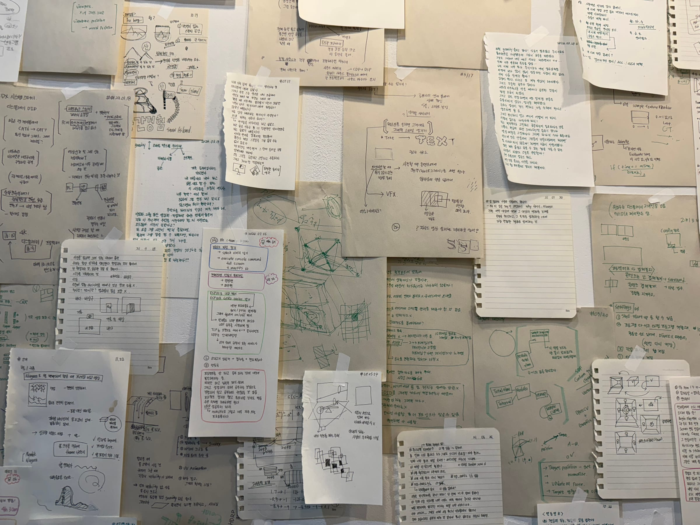
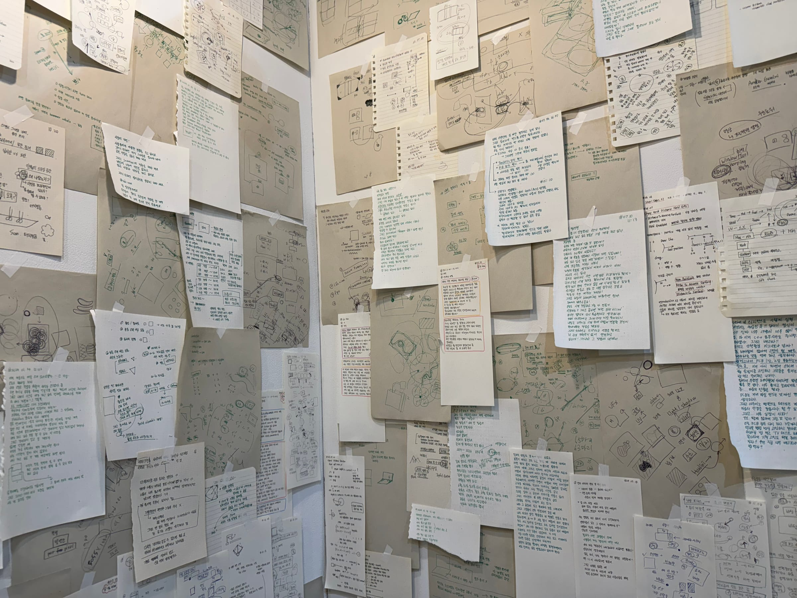
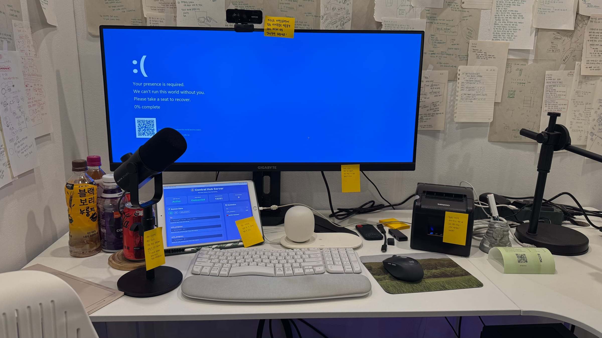
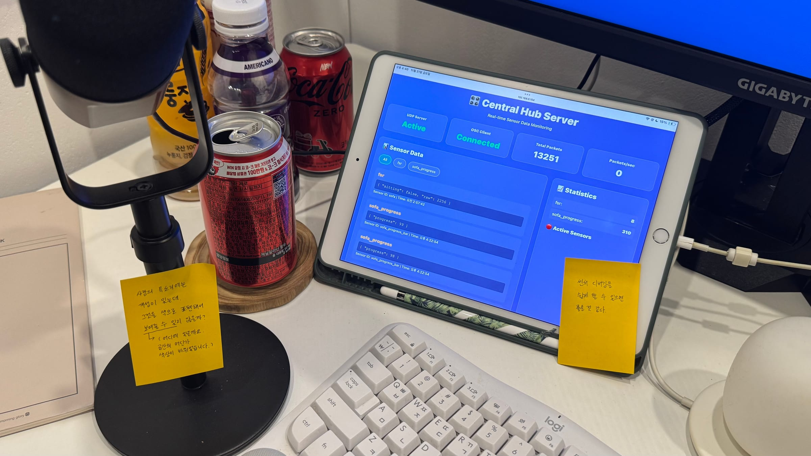
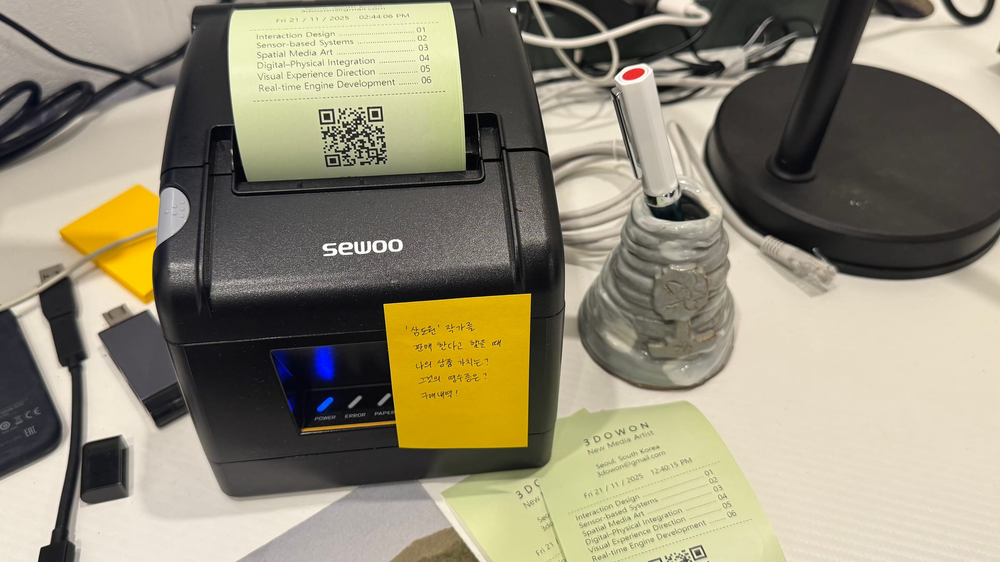
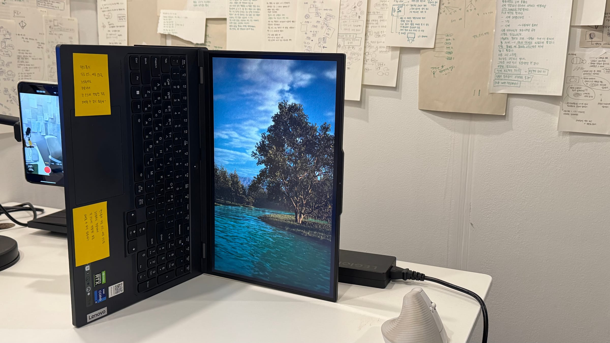
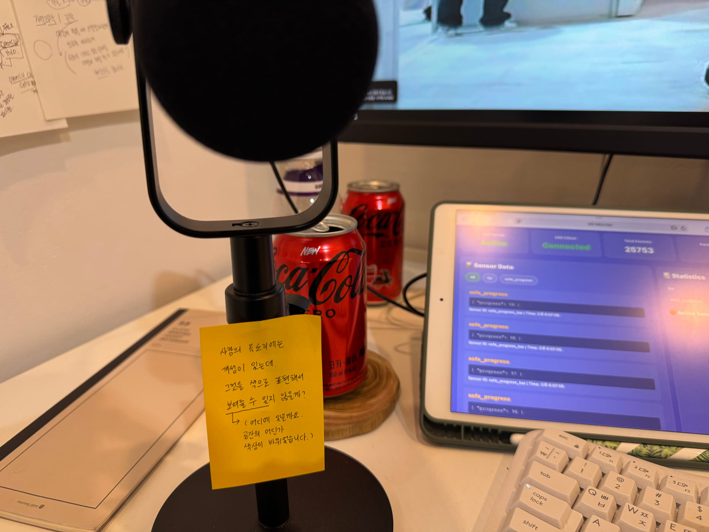
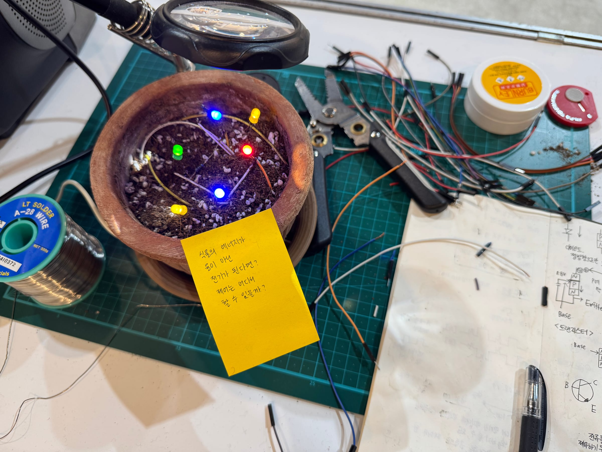

 3Dowon's Workdesk Date2025TypeExhibition, InteractiveTechnologyUnreal, ArduinoProductionSolo IntroductionA large-scale video installation reconstructing a record of light in an archival format.